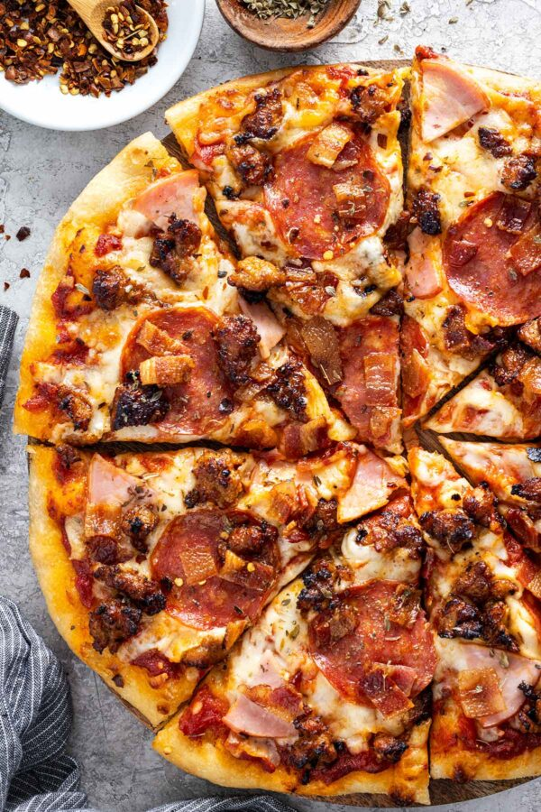

Description
Are you feeding a hungry family on game day?
This homemade meat lover’s pizza loaded with four types of proteins will easily do the trick.
Ingredients
- 1 pound pizza dough
- 1 tablespoon olive oil, plus more for brushing
- 8 ounces Italian sausage, mild or spicy
- 2 teaspoons cornmeal, optional
- ½ cup pizza sauce, or marinara sauce
Steps
- Preheat the Oven – Set the oven rack to the lower position and the temperature to 500ºF (260ºC).
- Prepare the Dough – Allow the prepared pizza dough to sit at room temperature for 30 minutes.
- Cook the Sausage – In a medium skillet or saute pan, heat the olive oil over medium-high heat. Add the meat, breaking it into small pieces. Cook until browned, about 4 to 6 minutes. Transfer to a bowl to cool while preparing the rest of the pizza.
- Prepare the Pan – Lightly brush a large baking sheet with olive oil. Evenly sprinkle cornmeal on the pan if desired for a crunchy crust texture.
- Shape the Dough – On a lightly floured surface, stretch and shape the dough into a 10-inch circle—transfer to the baking sheet. Use fingers to press into a 12-inch circle. Leave the edges slightly thicker, about ½-inch tall and wide.
- Add the Toppings – Spread the pizza sauce over the dough, followed by the mozzarella cheese, pepperoni, Canadian bacon, sausage, and bacon. Sprinkle on oregano and red pepper flakes, if desired.
- Bake – On the lowest oven rack, cook until the crust is golden brown and the cheese is melted and bubbly, about 10 to 12 minutes.
- Serve – Immediately slice and serve while still hot.